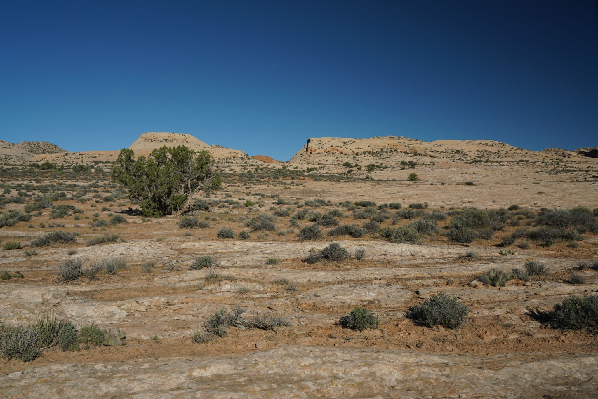
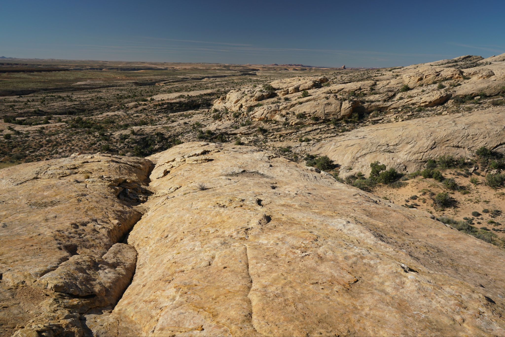
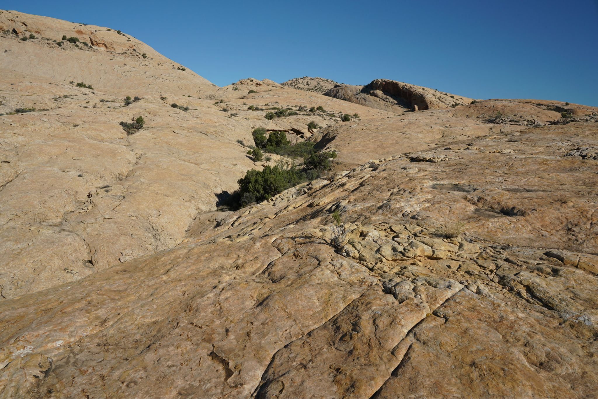
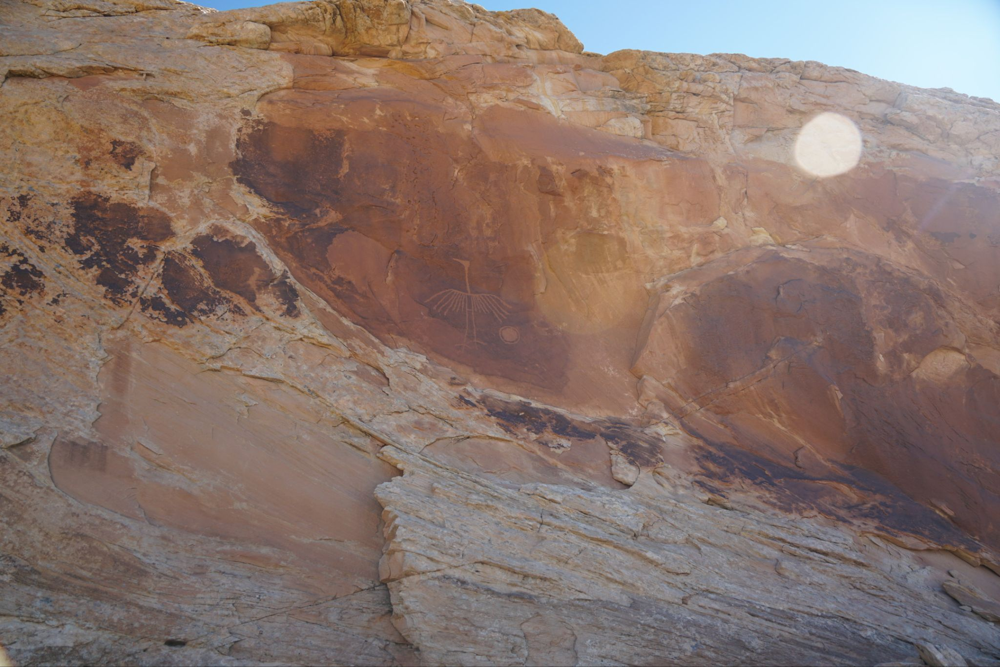

4/5/2026 - Crane Petroglyph
A short hike on a mostly unmarked trail leads to a medium size petroglyph of a crane. It might be difficult to find if the exact location is not known since it is on the second level of an alcove and ledge system. This is the only petroglyph on the rock so other hikes like the Wolfman Panel just to the south of here may offer more bang for the buck.



